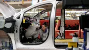

Comeback aus der Krise
»Boah ey« - Opel will E-Manta auf den Markt bringen
Bis vor wenigen Jahren steckte Opel in einer tiefen Krise. Nun geht es laut einem Bericht dank E-Autos für die Traditionsmarke aufwärts - künftig auch mit einem ganz besonderen Modell.
10.10.2023, 12.37 Uhr
Artikel zum Hören • 2 Min

Opel-Chef Huettl (r.) mit Thüringens Ministerpräsident Bodo Ramelow in Eisenach: Ab dem zweiten Halbjahr 2024 soll hier ein neues batterieelektrisches SUV entstehen. Foto: Sascha Fromm / IMAGO
Erst vor wenigen Jahren schien Opel kurz vor der Pleite, nun wächst der lange kriselnde Autobauer laut einem Zeitungsbericht dank seiner Elektroautos kräftig. »Weltweit sind wir dieses Jahr um zwölf Prozent bei den Verkäufen gewachsen«, sagte Opel-Chef Florian Huettl der »Augsburger Allgemeinen«. Vor allem auf dem Heimatmarkt Deutschland habe die vom Mutterkonzern Stellantis übernommene Marke zugelegt. »Im September konnten wir im Vergleich zum Vorjahr unseren Marktanteil in Deutschland von fünf auf mehr als sechs Prozent steigern.« Die Zahl der Neuzulassungen sei um rund 26 Prozent gestiegen. Opel werde auch den Manta als Elektroauto zurückbringen, kündigte Huettl in dem Interview an. »Wir bauen ganz sicher einen neuen Manta.« Bislang war der Opel Manta vor allem als sportlich-prolliges Coupé bekannt, die Neuauflage könnte Opels Präsentation auf der Automesse IAA zufolge jedoch eher wie ein SUV daherkommen. Huettl sagte: Er werde »kein Retro-Produkt«. Allerdings werde das alte Modell das neue inspirieren. »Man kann den alten Manta im neuen noch spüren und im Detail auch sehen.«
Messe IAA: Darf's ein E-Auto für 16.990 Euro sein? Oder eins für eine Million? Von Thomas Geiger

Autogramm Opel Astra Electric: Elektrisch, aber vertraut Von Thomas Geiger

Höhere Preise, niedrigere Kosten: Opel-Mutterkonzern Stellantis verdient fast 17 Milliarden Euro
